- 주제: 카메라로 촬영한 약품 이미지를 실시간으로 인식하고 LCD에 검출 박스와 클래스 이름을 표시하는 임베디드 비전 데모
- 문서 범위: 사례 소개, 데이터셋과 모델 소개, 학습 환경 구축, 모델 훈련, C++ 구현, 모델 추론과 결과 표시
- 학습/배포 경로: LabelImg/COCO JSON 데이터 준비 → PyTorch 학습 → ONNX → TensorFlow Lite → Vela → M55M1 보드 배포
- 목표: 복수 종류의 약품을 빠르고 정확하게 인식하고, 의료 및 제약 환경에서 오인식을 줄이는 것
| 대목차 | HTML 반영 내용 |
|---|---|
| 사례 소개 | 배경, 필요성, 활용 시나리오, 기대 성과 |
| 사용 데이터셋 및 모델 | LabelImg, Roboflow, YOLOX-Nano, COCO JSON |
| 훈련 환경 및 하드웨어 | GPU, CUDA, PyTorch, Epoch, Batch, 소요 시간 |
| 모델 훈련 | Anaconda 환경, 데이터셋 구조, config 수정, ONNX/TFLite/Vela |
| C++ 소프트웨어 구현 | BoardInit, ImageSensor, Frame Buffer, 추론, 후처리, Label.cpp |
제약 공장과 의료 현장에서 약물을 빠르고 정확하게 식별하는 것이 매우 중요하다고 설명합니다. 수작업 판독은 시간이 오래 걸리고 실수가 발생하기 쉬우므로, 카메라와 임베디드 AI를 이용해 즉시 판독하는 구조가 필요하다는 문제 정의로 시작합니다.
- 환자 스스로 약이 맞는지 확인할 수 있도록 보조
- 제약 공정에서 생산 중인 약품을 자동으로 모니터링
- 사람이 직접 확인하는 절차를 줄여 처리 속도와 정확도를 함께 확보
- 핵심 기술은 인공지능 기반 객체 검출과 영상 전처리/후처리의 결합입니다.
- YOLO 계열 물체 검출 모델을 사용해 약품 특징을 분석합니다.
- 의료, 제약, 감시 분야에서는 정확성과 실시간성이 동시에 요구됩니다.
- 가장 큰 과제는 외형이 비슷한 약품의 구분 정확도와 빠른 응답 속도입니다.
캡슐형, 원형, 반정 등 서로 다른 형태의 약품을 모두 지원하고, 의료 및 제약 생산 환경에서 사용할 수 있을 정도의 속도와 정확도를 목표로 한다고 밝힙니다. 기대 정확도는 95%로 명시되어 있습니다.
| 항목 | 내용 |
|---|---|
| 지원 형태 | 캡슐, 원형, 반정 등 다양한 약품 유형 |
| 목표 환경 | 의료 현장, 제약 생산 라인 |
| 기대 정확도 | 95% |
| 표시 방식 | 보드 LCD에 검출 박스와 라벨 표시 |
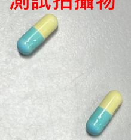
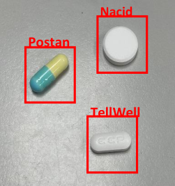
첫째는 LabelImg와 Roboflow를 이용한 데이터셋 준비, 둘째는 경량 모델인 YOLOX-Nano를 이용한 학습, 셋째는 PyTorch → TensorFlow Lite로 이어지는 모델 프레임워크 변환입니다.
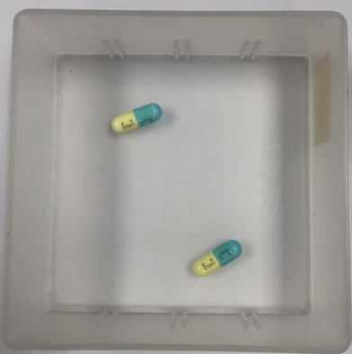
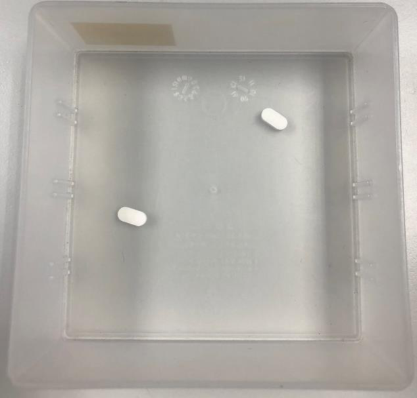
- 훈련 프레임워크는 PyTorch입니다.
- 훈련 모델은 YOLOX-Nano입니다.
- 데이터셋은 병원 약물 데이터셋이며 라벨링 도구는 LabelImg입니다.
- 데이터 형식은 COCO JSON입니다.
- 기준 데이터 수는 Train 1500장, Valid 300장입니다.
모델 리소스로 github.com/MaxCYCHEN/yolox-ti-lite_tflite_int8 저장소가 명시되어 있습니다. 즉, 학습과 TFLite/Vela 변환은 YOLOX Nano 기반 TinyML 파이프라인을 전제로 합니다.
| 구분 | 내용 |
|---|---|
| 라벨링 | LabelImg로 바운딩 박스 생성 |
| 데이터 포맷 | COCO JSON |
| 모델 | YOLOX-Nano |
| 학습 프레임워크 | PyTorch |
| 후속 변환 | TensorFlow Lite 및 Vela |
| 항목 | 값 |
|---|---|
| GPU | NVIDIA RTX 3060 TI |
| CUDA | 11.8 |
| PyTorch | 2.4.1 |
| 훈련 데이터 수 | 1800장 |
| Epoch | 200 |
| Batch size | 32 |
| 훈련 시간 | 1.5시간 |
- 환경 구축
- 데이터셋 준비
- TinyML Training으로 YOLOX-Nano 학습
- 모델 경량화
- Vela 컴파일
환경 구축을 두 장에 걸쳐 설명합니다. 먼저 Python 가상환경을 생성하고, pip/setuptools를 업데이트한 뒤, 시스템에 맞는 CUDA/PyTorch/MMCV 조합을 설치합니다. 마지막으로 requirements와 YOLOX 패키지 설치를 마칩니다.
conda create --name yolox_nu python=3.10 conda activate yolox_nu python -m pip install --upgrade pip setuptools python -m pip install torch torchvision torchaudio --index-url https://download.pytorch.org/whl/cu118 python -m pip install mmcv==2.0.1 -f https://download.openmmlab.com/mmcv/dist/cu118/torch2.0/index.html python -m pip install --no-input -r requirements.txt python setup.py develop
- CUDA 버전과 PyTorch 버전은 시스템 환경에 맞춰 조합해야 합니다.
- 예시는 cu118 기반 설치를 사용합니다.
- MMCV 설치는 GPU/torch 버전에 맞는 wheel URL을 선택하는 것이 핵심입니다.
데이터셋은 COCO JSON 형식을 사용하며, annotation 파일과 이미지 폴더를 아래 구조로 맞추라고 명시합니다.
Datasets/<your_datasets_name>/
annotations/
train_annotation_json_file
val_annotation_json_file
train2017/
train_img
val2017/
validation_img설정 파일은 exps/default/yolox_nano_ti_lite_nu.py이며, 데이터 경로와 annotation 파일명을 실제 데이터셋 이름으로 수정해야 합니다. 또한 사전학습 모델 경로를 지정한 뒤 훈련을 시작합니다.
# exps/default/yolox_nano_ti_lite_nu.py self.data_dir = "datasets/your_coco" self.train_ann = "your_train.json" self.val_ann = "your_val.json" # pretrain model pretrain/tflite_yolox_nano_ti/320_DW/yolox_nano_320_DW_ti_lite.pth python tools/train.py -f <MODEL_CONFIG_FILE> -d 1 -b <BATCH_SIZE> --fp16 -o -c <PRETRAIN_MODEL_PATH>
- 학습된 PyTorch 체크포인트를 ONNX로 export합니다.
- TFLite 양자화를 위해 calibration data를 생성합니다.
- onnx2tf로 ONNX를 TFLite로 변환합니다.
python tools/export_onnx.py -f <MODEL_CONFIG_FILE> -c <TRAINED_PYTORCH_MODEL> --output-name <ONNX_MODEL_PATH> python demo/TFLite/generate_calib_data.py --img-size <IMG_SIZE> --n-img <NUMBER_IMG_FOR_CALI> -o <CALI_DATA_NPY_FILE> --img-dir <PATH_OF_TRAIN_IMAGE_DIR> onnx2tf -i <ONNX_MODEL_PATH> -oiqt -qcind images <CALI_DATA_NPY_FILE> "[[[[0,0,0]]]]" "[[[[1,1,1]]]]"
양자화가 끝난 TFLite 모델은 vela\generated\에 두고, variables.bat에서 입력/출력 모델명을 지정한 뒤 gen_model_cpp를 실행합니다. 결과물은 C/C++ 프로젝트에 포함할 수 있는 .tflite.cc 파일로 생성됩니다.
set MODEL_SRC_FILE=<your tflite model> set MODEL_OPTIMISE_FILE=<output vela model> # output vela/generated/yolox_nano_ti_lite_nu_full_integer_quant_vela.tflite.cc
- 시스템 흐름도
- 개발 보드 하드웨어 요구사항 확인
- C++ Sample code 소개
- C++ 소프트웨어 실행 흐름
- 모델 추론 설명
- Label.cpp 갱신
- DEMO 영상
파란색 영역을 PC 학습 단계, 빨간색 영역을 보드 소프트웨어 구현 및 플래시 단계로 구분합니다. 즉, 학습이 끝나 C++ 모델 파일이 준비된 이후에야 보드 펌웨어와 연결할 수 있다는 점을 강조합니다.
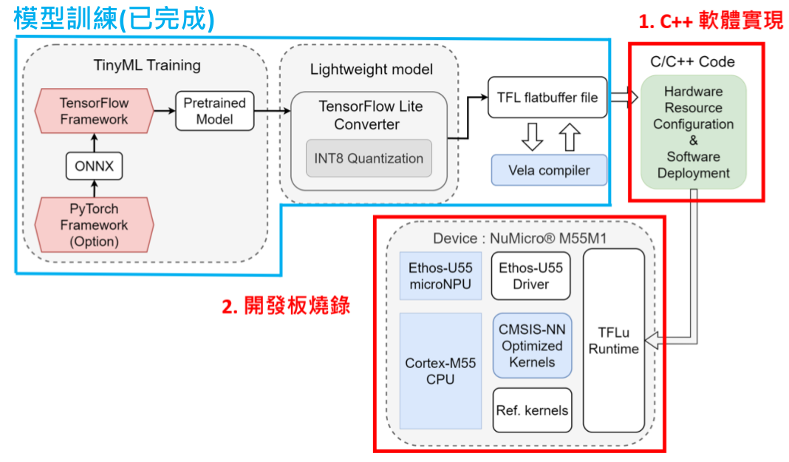
- LCD 모듈: 표시 인터페이스 설정과 EBI 통신 인터페이스 소프트웨어 구성이 필요합니다.
- Image sensor 모듈: 해상도 속성과 I2C 통신 인터페이스 구성이 필요합니다.
- 즉, 약물 인식은 단순 모델 실행이 아니라 카메라 입력과 LCD 출력이 모두 연결된 완전한 파이프라인입니다.
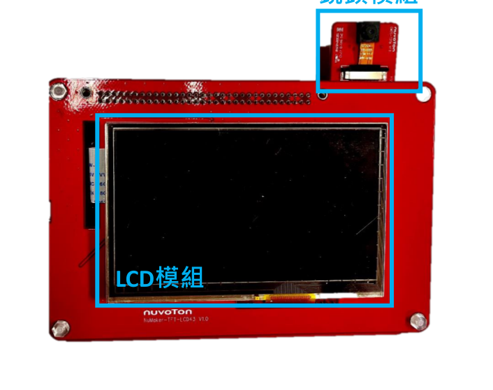
| 폴더/모듈 | 설명 |
|---|---|
| Device | LCD, ImageSensor, HyperRAM 등 보드 모듈 관련 파일 |
| KEIL | 플래시 및 프로젝트 설정 관련 파일 |
| Model | 훈련이 끝난 C++ 모델 파일을 넣는 위치 |
| NPU | 개발 보드 연산 유닛 관련 파일 |
- 하드웨어, 모델, Framebuf 초기화
- Framebuf 상태를 이용해 이미지 캡처, 전처리/추론, 후처리를 순차 실행
- 개발 보드 LCD에 검출 결과를 그린 뒤 다음 프레임 처리로 복귀
- 내부 RC 12 MHz와 외부 12 MHz 클록을 활성화
- 시스템 클록 소스를 APLL0로 전환하고 180 MHz APLL0 클록 사용
- 시스템 코어 클록 값을 갱신
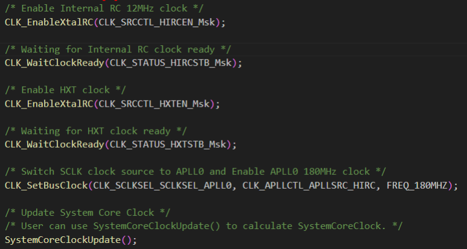
- YOLOX-Nano 모델 초기화 시 텐서 버퍼를 추론 작업 공간으로 제공합니다.
- GetModelPointer()와 GetModelLen() 함수로 모델 데이터를 로드합니다.
- 즉, Vela 결과물은 최종적으로 C/C++ 코드 안에서 직접 참조되는 형태입니다.
- USE_CCAP은 이미지 센서를 사용할지 여부를 제어합니다.
- USE_DISPLAY는 LCD 표시 모듈 사용 여부를 제어합니다.
- main.cpp에서 필요한 상수와 헤더를 선언해 각 모듈 기능을 활성화합니다.
| 함수 | 역할 |
|---|---|
| ImageSensor_Init() | 센서 주파수/타이밍을 초기화하고 CCAP 하드웨어를 설정 |
| ImageSensor_Capture() | 프레임을 지정된 버퍼 주소로 캡처 |
| ImageSensor_Config() | 포맷, 너비, 높이 등 이미지 파라미터 설정 |
| ImageSensor_TriggerCapture() | 셔터 신호와 함께 캡처 트리거 |
| ImageSensor_WaitCaptureDone() | 캡처 완료를 기다리고 timeout 처리 |
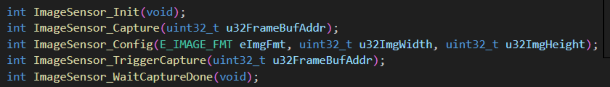
메인 루프에서는 계속해서 새 프레임을 받아야 하므로, S_FRAMEBUF 구조체와 상태 값 EMPTY / FULL / INF를 이용해 처리 단계를 분리합니다.
| 상태 | 기능 | 대응 처리 |
|---|---|---|
| eFRAMEBUF_EMPTY | 새 이미지 데이터 수신 | ImageSensor_Capture() 호출 후 FULL로 변경 |
| eFRAMEBUF_FULL | 전처리 및 모델 추론 | imlib_nvt_scale() 후 추론, 완료 시 INF로 변경 |
| eFRAMEBUF_INF | 검출 박스 그리기 및 결과 표시 | DrawImageDetectionBoxes() 후 EMPTY로 복귀 |
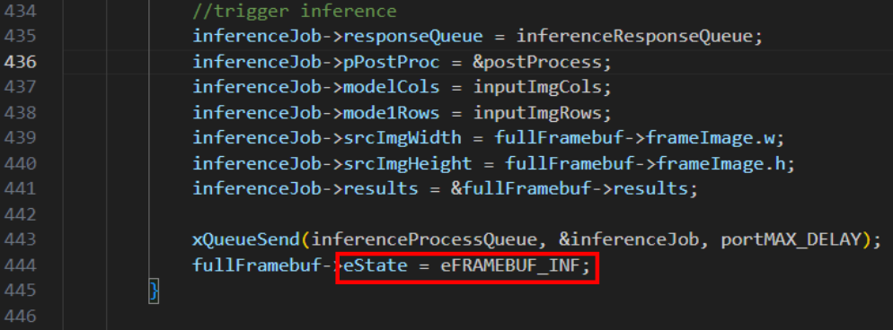
- FreeRTOS의 xTaskCreate()로 추론 태스크를 생성합니다.
- eFRAMEBUF_FULL 상태에서 실제 모델 추론을 수행합니다.
- 후처리 단계에서는 네트워크 출력 좌표를 원본 이미지 크기로 다시 변환합니다.
- 모델 출력 텐서에서 바운딩 박스와 클래스 확률을 추출합니다.
- NMS를 적용해 중복 검출을 제거하고 resultsOut 벡터에 최종 결과를 저장합니다.
- PresentInferenceResult()는 클래스와 위치를 표시하고, DrawImageDetectionBoxes()는 실제 박스와 라벨을 그립니다.
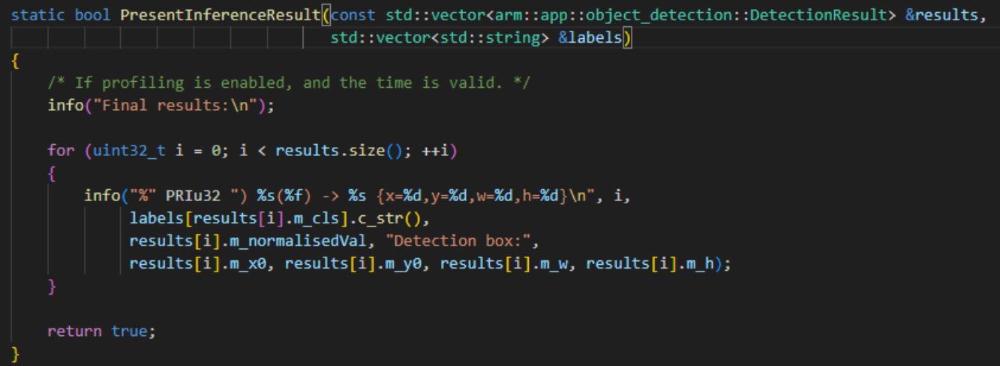
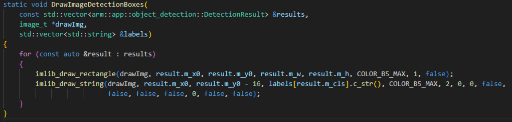
마지막으로 Model/Label.cpp 안의 labelVec[]를 실제 학습 클래스에 맞게 수정해야 합니다. 예시는 TellWell, Postan, Nacid를 나열합니다. 이 작업이 빠지면 모델은 맞게 추론해도 LCD 문자열이 잘못 표시됩니다.
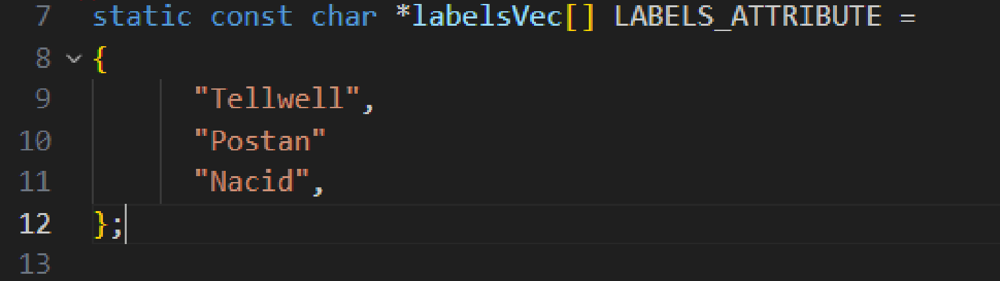
약물 인식 문서의 핵심은 단순 결과 화면이 아니라, 데이터 준비부터 학습 환경 구축, 모델 변환, C++ 구현, 화면 표시까지 하나의 배포형 예제로 완성되어 있다는 점입니다.